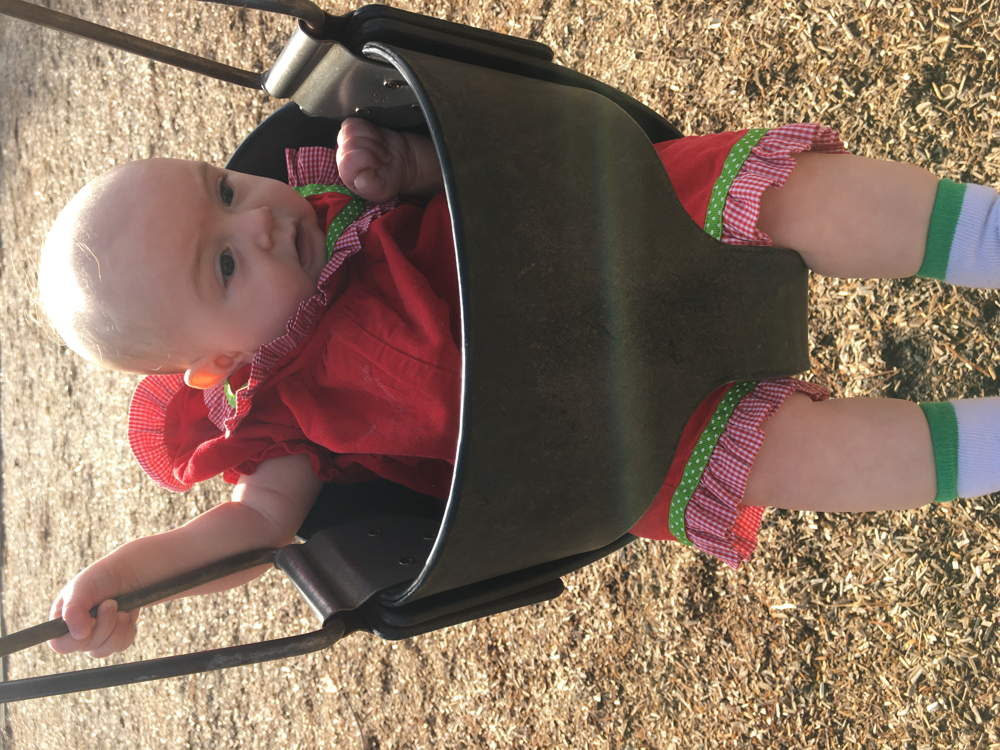

Photo Gallery
This section will include a regularly updated and rotated selection of Jo's finest portraiture and photographic documentation of her many enviable adventures. (Click images to view full size.)



Jo Martin was born in summer of 2019 and immediately developed a devoted following of adoring fans, who clearly needed an organized means of connecting and sharing their love of the one and only Jo Martin, in all her fascinating endearingness. Thus, the Jo Martin Fan Club was born, and has grown internationally to include members across the great state of North Carolina, the US, as well as the globe.
This section will include a regularly updated and rotated selection of Jo's finest portraiture and photographic documentation of her many enviable adventures. (Click images to view full size.)